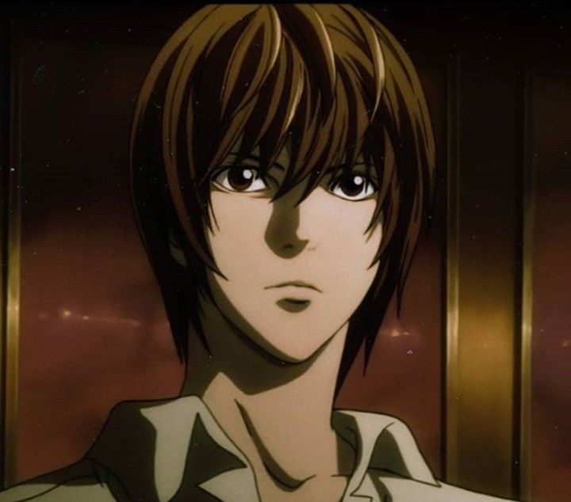
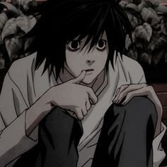
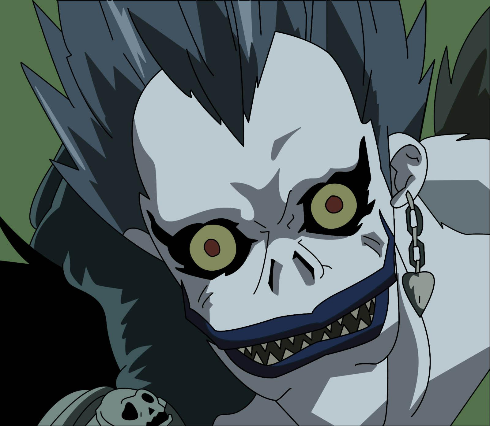
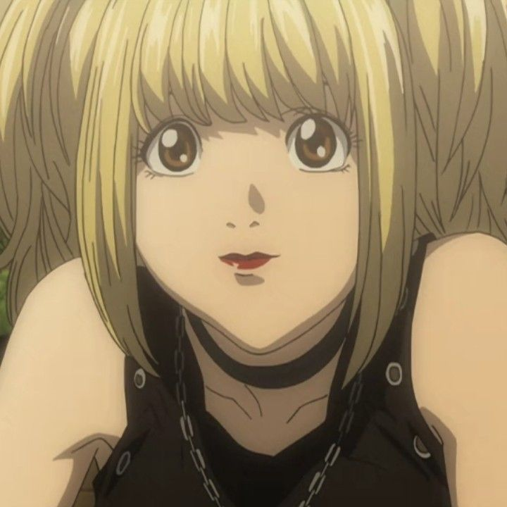
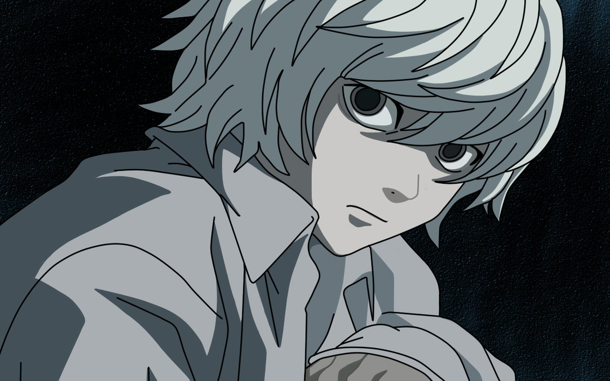

"Death Note" is a captivating and thought-provoking manga and anime series that has left an indelible mark on the world of fiction. Created by Tsugumi Ohba and Takeshi Obata, this dark and morally complex tale revolves around Light Yagami, a brilliant high school student who stumbles upon a supernatural notebook with the power to bring death to anyone whose name is written within its pages. As Light becomes consumed by the desire to rid the world of criminals and establish his own vision of justice, he adopts the chilling alias 'Kira' and embarks on a ruthless crusade. However, his actions attract the attention of the enigmatic detective 'L,' leading to an electrifying game of cat and mouse that unfolds across the pages of the Death Note
|  |  |  |  |  |
Light Yagami, the complex and central character of "Death Note," is a character of unparalleled intelligence and ambition. At first glance, he appears to be an exemplary high school student, known for his academic prowess and sense of justice. However, Light's life takes a dark and dramatic turn when he discovers the Death Note, a supernatural notebook that grants him the power to take life at will. With the pseudonym 'Kira,' he embarks on a twisted quest to rid the world of criminals and reshape society according to his own moral code
L, the enigmatic and brilliant detective in "Death Note," is a character shrouded in mystery and intrigue. With a penchant for eccentric habits like sitting in a crouched position and hiding his face, L is the ultimate foil to Light Yagami, the series' protagonist. He is tasked with the unenviable challenge of unmasking the identity of Kira, the alias Light adopts as he uses the Death Note to eliminate criminals. What makes L an iconic character is his unwavering dedication to justice and his unrelenting pursuit of the truth. He employs keen deductive reasoning, exceptional analytical skills, and a knack for out-of-the-box thinking to stay one step ahead of Light. L's introverted and eccentric personality contrasts sharply with Light's charisma and charm, making their intellectual battles the heart of the series
Ryuk, the enigmatic Shinigami (death god) in "Death Note," is a character of both darkness and whimsy. He is the one who drops the Death Note into the human world, setting the series' dramatic events into motion. With his eerie appearance, complete with sharp teeth and a macabre grin, Ryuk is a stark contrast to the human characters he observes.
Misa Amane, a prominent character in "Death Note," is a complex and multifaceted individual who plays a significant role in the series. Introduced as a devoted and obsessive fan of Kira, the alias for Light Yagami when he uses the Death Note, Misa's life takes a dramatic turn when she herself gains ownership of a Death Note. Her obsession with Kira goes beyond mere admiration, as she is willing to use her newfound power to aid him in his quest for justice, even though her sense of justice differs considerably from Light's.
Near, also known as Nate River, is a pivotal character in "Death Note" and one of the successors to the renowned detective L. Following L's demise, Near and his counterpart Mello take on the mission of exposing Kira, the true identity of Light Yagami, and bringing him to justice. Near is characterized by his calm and collected demeanor, exceptional intellect, and unique quirks, such as playing with toys and puzzles during investigations.